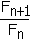
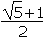
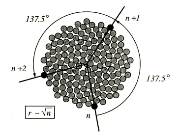
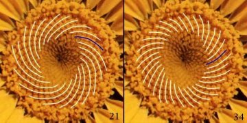
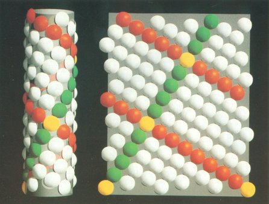
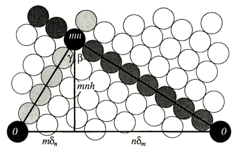
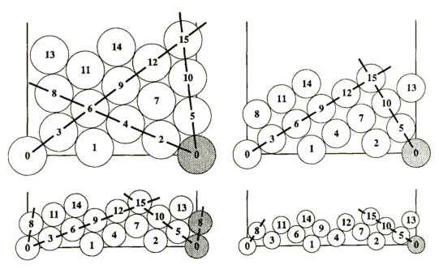
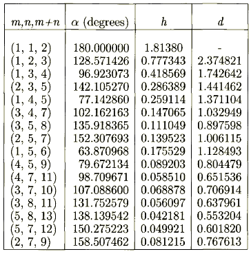
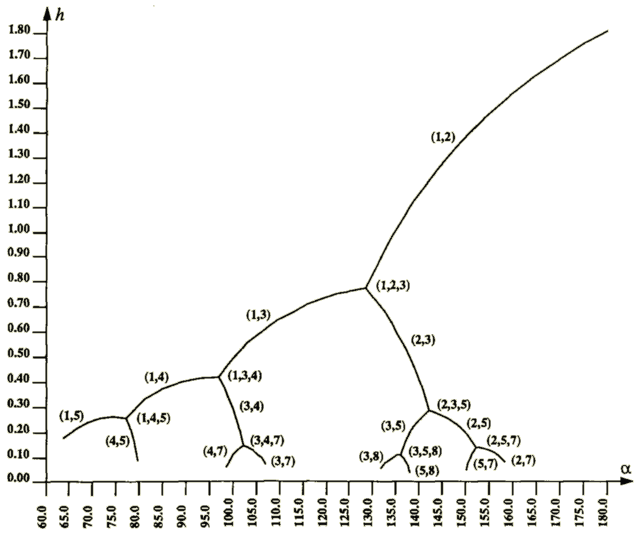

|
| [4.1. Planar] |
| [4.2. Zylindrisch] |
Die geordnete Anordnung von lateralen Organen (z.B. Blätter auf einem Stiel, Schuppen auf zylindrischen Körpern, Samen in einem Blütenkopf) ist ein wichtiger Bestandteil von Pflanzenformen, bekannt als Phyllotaxis (gr. Phyllo: Blatt; gr. Taxis: Anordnung).
Immer wiederkehrende Werte bei den Verteilungen sind Zahlen aus der Fibonacci-Reihe, die durch folgende rekursive Gleichung definiert ist:
Fn = Fn-1 + Fn-2mit den Anfangszahlen 1 und 1.
1, 1, 2, 3, 5, 8, 13, 21, 34, 55, 89, ...Diese Reihe strebt gegen unendlich, während das Verhältnis aufeinanderfolgender Elemente  gegen die Zahl t =  , auch bekannt als der goldene Schnitt, strebt.
 |
4.1. Planar |
|
Um die Verteilung von Sonnenblumenkernen im Kopf der Pflanze zu berechnen, führte Vogel die Formel
f = n·137.5°, r = c nein, für die folgende Punkte gelten:
Die Abbildung lässt sich in einem L-System so beschreiben (Abb. 4.1):
Sonnenblumenkernverteilung
| Inkludiere: D | |||
| w | A(0) | ||
|---|---|---|---|
| p | A(n) → +(a)[f(n^0.5)~D]A(n+1) | ||
| a | 137.5° | ||
Der Zusammenhang r ~ n lässt sich dadurch erklären, dass die Anzahl aller Samen (gleich groß und dicht angeordnet), die in einen Kreis mit dem Radius r passen, proportional zu dessen Fläche sind. So ist die Ordnungszahl des äußersten Kerns n proportional zu r², bzw. r ~ n .
Abb. 4.1: Mathematisches Modell der
Kernverteilung
im Kopf der Sonnenblume

Der Winkel 137.5° ist nicht so leicht zu erklären. Vogel gibt zwei Bedingungen für ihn an:
| |
|
 Abb. 4.3: Die zwei Spiralenmengen (21,34) bei der Margerite |
|
4.2. Zylindrisch |
 |
Spiralenartige Muster kommen in ausgedehnten zylinderförmigen Organen wie der Ananas vor und können durch dieses Modell, welches die Anordnung von Schuppen auf Zylindern darstellt, berechnet werden.
Diese Muster werden durch die Formeln
f = n·a, r = konst, H = h·nbeschrieben, wobei folgende Punkte gelten:
Das parametrische L-System, dass diese Muster (Abb. 4.4) generiert, lautet:
Zylindrische Phyllotaxis
| Inkludiere: D | |||
| w | A | ||
|---|---|---|---|
| p | A → [&(90)f(r)~D]f(h)/(a)A | ||
| a | 137.5281° | ||
| h | 35.5 | ||
| r | 500 | ||
Abb. 4.4: Modell der zylindrischen Phyllotaxis auf einem zusammengerollten (links) und einem entrollten (rechts) Zylinder
Das Symbol A produziert Knotenpunkte f(h) auf der Hauptachse der modellierten Struktur. Mit jeder dieser Knotenpunkte wird eine Scheibe ~D assoziiert, die im Abstand r durch &(90) rechtwinklig zur Achse mittels f(r) plaziert wird. Durch das Modul /(a) , das A um seine Achse dreht, entsteht die spiralenartige Anordnung der Schuppen.
Im planaren Modell lässt sich der konstante Divergenzwinkel a=137.5° in vielen Pflanzenarten finden. Dabei hängt die Anzahl der wahrgenommenen Spiralen von der Größe der Blüte ab (siehe Kapitel 4.1.). Dagegen sind Muster auf dem Zylinder auf dessen gesamter Länge einheitlich. Die Anzahl der Spiralen hängt dabei nicht von der Größe, sondern lediglich von den Parametern a und h ab. Das Problem ist nun, a und h als Funktion der Spiralen, die sich in und gegen den Uhrzeigersinn drehen, auszudrücken. Die Lösung folgt dem von Erickson (aus [1]):
Die phyllotaktischen Muster können durch auf die Oberfläche des Zylinders gepackte Kreise gedeutet werden. Spiralenpaare bestehen aus einer Reihe von berührenden Kreisen, deren Ordnungszahlen eine arithmetische Reihe mit der Differenz m bilden. Diese Zahl heisst parastichy order (am besten mit Spiralenordnung zu übersetzen) und wird im Englischen vor das Wort "parastichy" gesetzt. Ich möchte den Namen "Spirale" verwenden (z.B. "3-Spirale"), obwohl nicht die ganze Spirale, sondern nur ein Teil davon gemeint ist. So könnten die Kreise auf der Zylinderoberfläche in zwei kongruente 2-Spiralen, fünf kongruente 5-Spiralen, usw. eingeteilt werden. Die angulare Verschiebung zwischen zwei aufeinanderfolgenden Kreisen in einer m-Spirale wird als dm gekennzeichnet. Diese Zahl kann Werte im Bereich ]-p;p] annehmen. Die Beziehung zwischen dm und dem Divergenzwinkel a wird durch die Gleichung
(I)
dm = ma - Dm2pausgedrückt, wobei Dm ein ganzzahliger Wert ist, der enzyklische Zahl (engl: encyclic number) genannt wird. Sie beschreibt die Anzahl der Windungen, die die generative Helix zwischen zwei aufeinanderfolgenden m-Verläufen beschreibt, auf eine ganze Zahl gerundet. Auch für die entgegengesetzt laufende Spirale (rote bzw. grüne Kreise in Abb. 4.4) kann sich analog zu (I) eine Formel aufstellen lassen:
(II)
dn = na - Dn2pAngenommen, die m- und n- Spiralen beginnen beim Kreis 0, dann müssen sie sich in ihren Wegen wieder beim Kreis mn schneiden. Dieser Schnittpunkt ist der erste über dem Kreis 0. Daraus folgt, dass der Weg von Kreis 0 zu mn auf der m-Spirale und zurück zu 0 auf der n-Spirale den Zylinder genau einmal umrundet. Der Teil der m-Spirale vom Kreis 0 bis zu mn (inkl. der Endpunkte) besteht aus n+1 Kreisen, weshalb die angulare Distanz zwischen den Kreisen 0 und mn genau ndm ist. Analog entspricht der Abstand zwischen den Kreisen 0 und mn auf der n-Spirale gemessen mdn, woraus die Gleichung
(III)
ndm - mdn = ±2pfolgt. Die Vorzeichen ergeben sich aus den gegenseitig gerichteten Spiralen, wo ein d positiv und das andere negativ ist. Ersetzt man bei (III) dm und dn durch die rechten Seiten bei (I) bzw. (II), so folgt
(IV)
nDm - mDn = ±1.Zur besseren Analyse lässt sich ein Dreieck auf dem entrollten Zylinder durch die Kreise mn und 0 (zweimal) aufspannen (Abb. 4.5).

Abb. 4.5: Das auf dem entrollten Zylinder zwischen den Spiralen und der Grundfläche aufgespannte Dreieck
Die Höhe mit der Länge mnh teilt das Dreieck in 2 rechtwinklige Dreiecke. Wenn d den Durchmesser der Kreise repräsentiert, lassen sich mit dem phytagoräischen Lehrsatz folgende Gleichungen aufstellen:
(ndm)² + (mnh)² = (nd)²und
(mdm)² + (mnh)² = (md)².
Nach h und d aufgelöst ergibt sich
(V)
h = (dm²-dn²) / (n²-m²)
(VI)
d = (n²dm²-m²dn²) / (n²-m²)
oder, unter Verwendung von Gleichung (III)
(VII)
d = 2p(ndm+mdn) / (n²-m²) .
Das Problem besteht darin, Werte für dm und dn zu bestimmen, da sie nicht einfache Funktionen von m bzw. n sind. Bei gegebenen m und n kann man sogar mehrere dm und dn aus Bereichen mit Spiralen verschiedener Steilheit auswählen (Abb. 4.6).
Abb. 4.6: Verschiedene Verteilungen mit Spiralen verschiedener Steilheit
Um diese Bereiche festzustellen, sollte man beobachten , dass sich die phyllotaktischen Muster bei deren Grenzen verändern; eine zuvor dagewesene verschwindet und eine neue entsteht. So koexistieren bei der Bereichsgrenze sogar 3 Spiralen. Aus Abb. 4.6 folgt, dass an einem Ende des Bereiches die dritte Spirale die Ordnung |m-n| und am anderen Ende (m+n) hat. Drei koexistierende Spiralen implizieren, dass jeder Kreis 6 andere Kreise berührt. Dadurch liegen alle Kreise in einem hexagonalen Gitter, was man in Abb. 4.5 links oben und links unten sieht. Hier ist der Winkel b+g bei der Spitze mn (siehe Abb. 4.4) gleich 2p/3 bzw. 120°. Drückt man die Basis des Dreiecks durch die restlichen Seitenkanten und deren Winkel aus, folgt
(2p)² = (nd)² + (md)² - 2(nd)(md)cos(2p/3)
und nach Vereinfachung
(VIII)
d = 2p / m²+mn+n² .
Gleichungen (VII) und (VIII) ergeben
(IX)
ndm + mdn = 2p (n²-m²) / (m²+mn+n²).
Das Auflösen von dm und dn durch (III) und (IX) ergibt
(X)
dm = (m+2n) / (m²+mn+n²) und(XI)
dn = (2m+n) / (m²+mn+n²).
Sind die Werte für dm und dn gegeben, kann durch Gleichung (I) oder (II) der Wert für a gefunden werden, falls die enzyklischen Zahlen Dm oder Dn bekannt sind. Diese Nummern sind die kleinsten positiven Ganzzahlen, die Gleichung (IV) erfüllen. Das Auffinden dieser kleinsten Werte erfolgt in der Praxis oft empirisch oder durch einfache Computerprogramme.
Also kann ein phyllotaktisches Muster durch ein Zahlenpaar (m,n) so konstruiert werden:
Der Durchmesser d wird nicht direkt in Formeln für Bildsynthese verwendet, zeigt aber die ungefähre Größe der verwendeten Körper. Folgende Tabelle zeigt Parameterwerte, für die drei Spiralen koexistieren:

Bei einem gegebenen Muster mit zwei Spiralen zeigt die Tabelle die Grenzen für a. Z.B. kann der Wert für a in einem (5,8)-Muster 135.918365° bis 138.139542° betragen, was aus den Werten bei (3,5,8) und (5,8,13) hervorgeht.
Abb. 4.7 veranschaulicht den Zusammenhang zwischen a und h für verschiedene phyllotaktische Muster. Dabei repräsentieren die Bögen Strukturen mit zwei und Verzweigungspunkte solche mit drei Spiralen.

Abb. 4.7: Diagramm für α und h